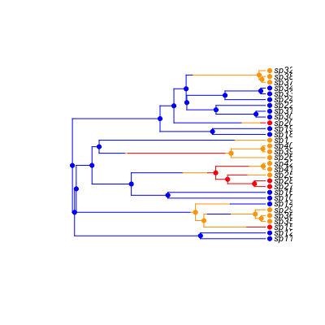

make.musse(tree, states, k, sampling.f=NULL, strict=TRUE, control=list()) starting.point.musse(tree, k, q.div=5, yule=FALSE)
ape “phylo” format.k. This vector must have names that
correspond to the tip labels in the phylogenetic tree
(tree$tip.label). For tips corresponding to unresolved
clades, the state should be NA.k where sampling.f[i]
is the proportion of species in state i that are present in
the phylogeny. A value of c(0.5, 0.75, 1) means that half of
species in state 1, three quarters of species in state 2, and all
species in state 3 are included in the phylogeny. By default all
species are assumed to be knownstates vector is always checked to make sure
that the values are integers on 1:k. If strict is
TRUE (the default), then the additional check is made that
every state is present. The likelihood models tend to be
poorly behaved where states are missing, but there are cases
(missing intermediate states for meristic characters) where allowing
such models may be useful.make.bisse.Prepare to run MuSSE (Multi-State Speciation and Extinction) on a phylogenetic tree and character distribution. This function creates a likelihood function that can be used in maximum likelihood or Bayesian inference.
MuSSE is agnostic as to whether multiple states or multiple traits are modelled (following Pagel 1994). Instead, a transition rate matrix amongst possible trait/state combinations is constructed and the analysis is conducted on this.
The helper function make.musse.multitrait wraps the
basic MuSSE model for the case of a combination of several binary
traits; its argument handling are a little different; please see the
help page for more information.
With more than 9 states, qij can be ambiguous (e.g. is q113 1->13 or 11->3?). To avoid this, the numbers are zero padded (so that the above would be q0113 or q1103 for 1->13 and 11->3 respectively). It might be easier to rename the arguments in practice though.
## 1: BiSSE equivalence pars <- c(.1, .2, .03, .04, 0.05, 0.1) set.seed(2) phy <- tree.musse(pars, 20, x0=1) ## Show that the likelihood functions give the same answers. Ignore the ## warning when creating the MuSSE function. lik.b <- make.bisse(phy, phy$tip.state-1) lik.m <- make.musse(phy, phy$tip.state, 2) all.equal(lik.b(pars), lik.m(pars), tolerance=1e-7)[1] TRUE## Notice that default argument names are different between BiSSE and ## MuSSE, but that the order is the same. argnames(lik.b) # BiSSE: 0/1[1] "lambda0" "lambda1" "mu0" "mu1" "q01" "q10"argnames(lik.m) # MuSSE: 1/2[1] "lambda1" "lambda2" "mu1" "mu2" "q12" "q21"## 2: A 3-state example where movement is only allowed between ## neighbouring states (1 <-> 2 <-> 3), and where speciation and ## extinction rates increase moving from 1 -> 2 -> 3: ## You can get the expected argument order for any number of states ## this way (sorry - clunky). The help file also lists the order. diversitree:::default.argnames.musse(3)[1] "lambda1" "lambda2" "lambda3" "mu1" "mu2" "mu3" "q12" [8] "q13" "q21" "q23" "q31" "q32"## Here are the parameters: pars <- c(.1, .15, .2, # lambda 1, 2, 3 .03, .045, .06, # mu 1, 2, 3 .05, 0, # q12, q13 .05, .05, # q21, q23 0, .05) # q31, q32 set.seed(2) phy <- tree.musse(pars, 30, x0=1) ## Extract history from simulated tree and plot ## (colours are 1: black, 2: red, 3: blue) col <- c("blue", "orange", "red") h <- history.from.sim.discrete(phy, 1:3) plot(h, phy, cex=.7, col=col)
## The states are numbered 1:3, rather than 0:1 in bisse. states <- phy$tip.state table(states)states 1 2 3 13 13 4## 2: Likelihood ## Making a likelihood function is basically identical to bisse. The ## third argument needs to be the number of states. In a future ## version this will probably be max(states), but there are some ## pitfalls about this that I am still worried about. lik <- make.musse(phy, states, 3) ## Here are the arguments. Even with three states, this is getting ## ridiculous. argnames(lik)[1] "lambda1" "lambda2" "lambda3" "mu1" "mu2" "mu3" "q12" [8] "q13" "q21" "q23" "q31" "q32"## Start with a fully constrained model, but still enforcing stepwise ## changes (disallowing 1 <-> 3 shifts) lik.base <- constrain(lik, lambda2 ~ lambda1, lambda3 ~ lambda1, mu2 ~ mu1, mu3 ~ mu1, q13 ~ 0, q21 ~ q12, q23 ~ q12, q31 ~ 0, q32 ~ q12) p <- starting.point.musse(phy, 3) fit.base <- find.mle(lik.base, p[argnames(lik.base)]) ## Now, allow the speciation rates to vary: lik.lambda <- constrain(lik, mu2 ~ mu1, mu3 ~ mu1, q13 ~ 0, q21 ~ q12, q23 ~ q12, q31 ~ 0, q32 ~ q12) fit.lambda <- find.mle(lik.lambda, p[argnames(lik.lambda)]) ## Very little improvement in fit (this *is* a small tree) anova(fit.base, lambda=fit.lambda)Df lnLik AIC ChiSq Pr(>|Chi|) minimal 3 -110.64 227.27 lambda 5 -110.21 230.42 0.84603 0.6551## Run an MCMC with this set. Priors will be necessary (using the ## usual exponential with mean of 2r) prior <- make.prior.exponential(1 / (2 * (p[1] - p[4]))) ## <strong>Not run</strong>: # samples <- mcmc(lik.lambda, coef(fit.lambda), nstep=1000, w=1, # prior=prior, print.every=50) # # ## Posterior probability profile plots for the three speciation rates. # profiles.plot(samples[2:4], col) # abline(v=c(.1, .15, .2), col=col) # ## <strong>End(Not run)</strong>
make.bisse for the basic binary model, and
make.musse.multitrait for the case where the data are
really combinations of binary traits.